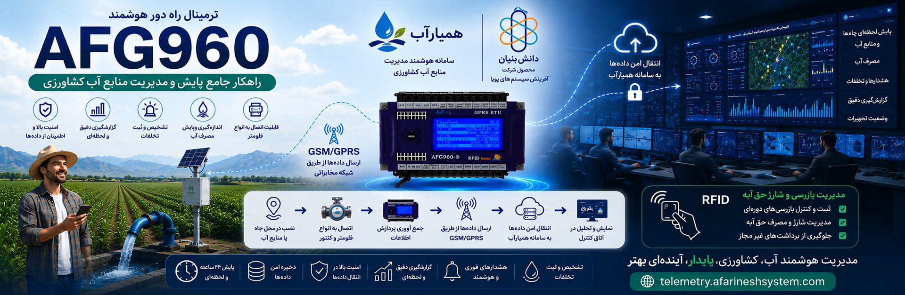
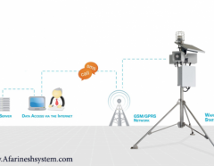
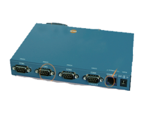
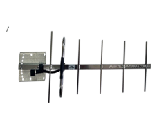
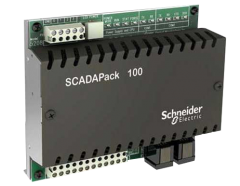
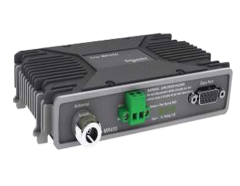
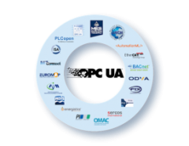
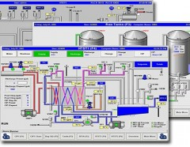
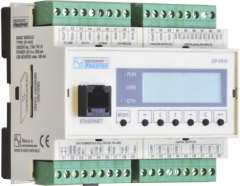
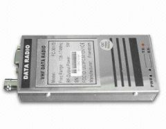

Slide 01
RTU AFG960
اسلاید اصلی سایت تلهمتری — ترمینال راه دور AFG960
Telemetry Control Room
راهحلهای فناورانه شرکت دانشبنیان آفرینش سیستم برای پایش، کنترل و اسکادا در صنایع نفت و گاز، آب و فاضلاب، کشاورزی و سایر حوزهها — دقیق، پایدار و مقیاسپذیر.
شرکت دانشبنیان با تمرکز بر سامانههای صنعتی تلهمتری
Solutions Matrix
راهحلهای فناورانه شرکت دانشبنیان آفرینش سیستم برای صنایع حیاتی کشور.
ارایه راهحلها در زمینه سامانههای کنترل و اسکادا و بهینهسازی در صنایع نفت و گاز
مطالعه راهکارارایه راهحلها در زمینه سامانههای اسکادا و مدیریت بهرهوری در صنایع آب و فاضلاب
بیشترارایه انواع راهحلها در زمینه مدیریت و بهرهوری در کشاورزی
بیشترارایه راهحلهای کاربردی به منظور افزایش بهرهوری، کاهش هزینهها و افزایش ضریب اطمینان و کیفیت
بیشترProduct Deck
برخی از آخرین محصولات و خدمات واحد تلهمتری
همه محصولات
سامانههای هشداردهنده برای پایش بههنگام و کنترل از راه دور در پروژههای شهری و زیرساختی.
جزئیات محصول







Signal Feed
جدیدترین اخبار و رویدادهای شرکت آفرینش سیستمهای پویا
پذیرفته شدن چندین محصول فناورانه شرکت آفرینش سیستم به عنوان کالاهای دانشبنیان و اخذ صلاحیت نشان دانشبنیان تولیدی-صنعتی...
Control Desk
واحد تلهمتری و کنترل از راه دور
آدرس: مشهد، بولوار وکیلآباد — نبش فارغالتحصیلان ۱۵ — پلاک ۱۰۵ — طبقه ۳ — واحد ۵